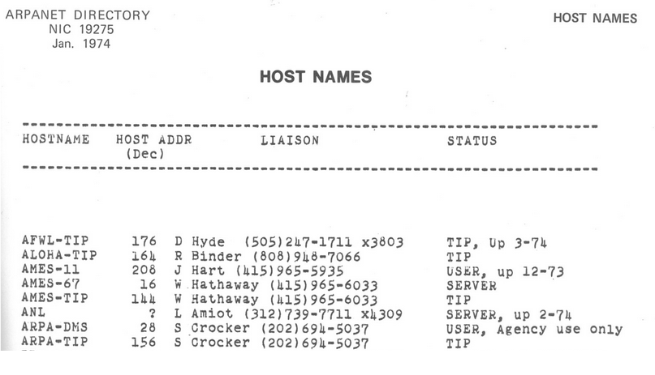
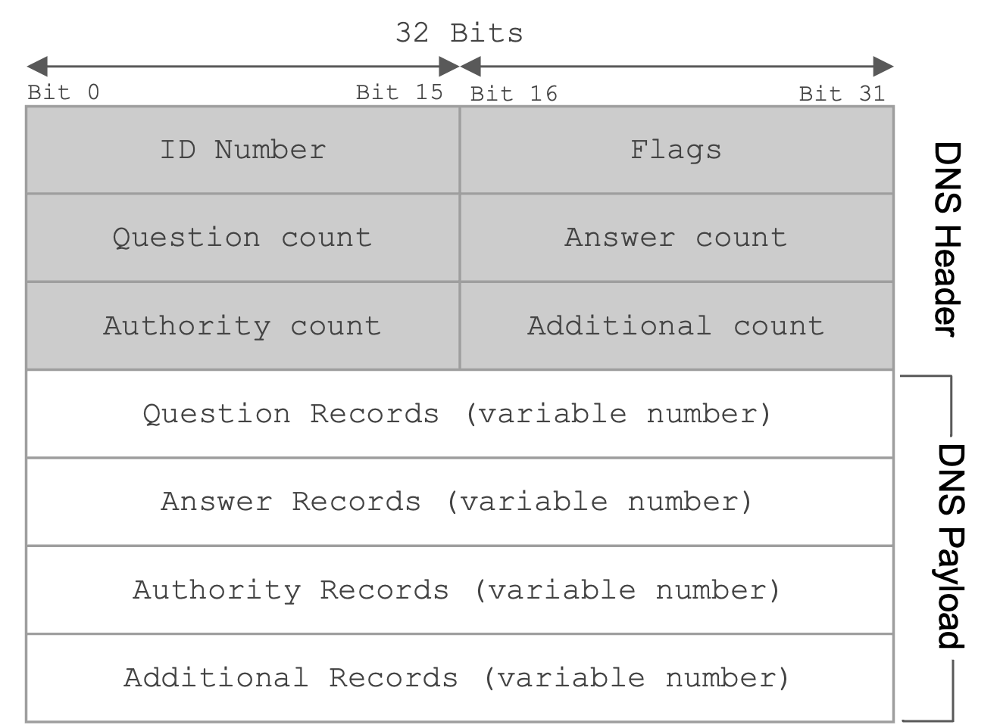
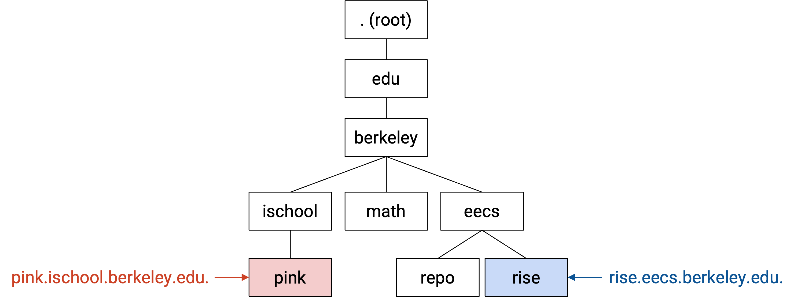
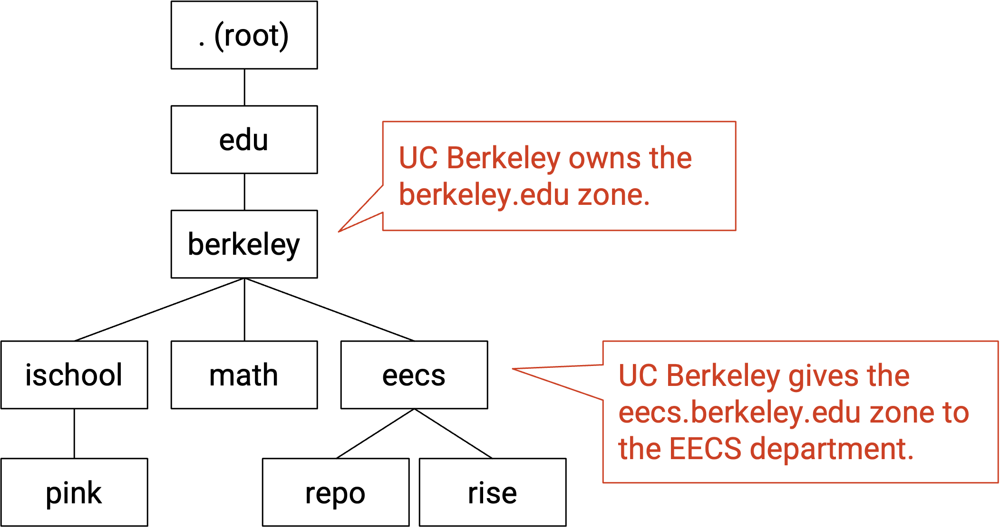
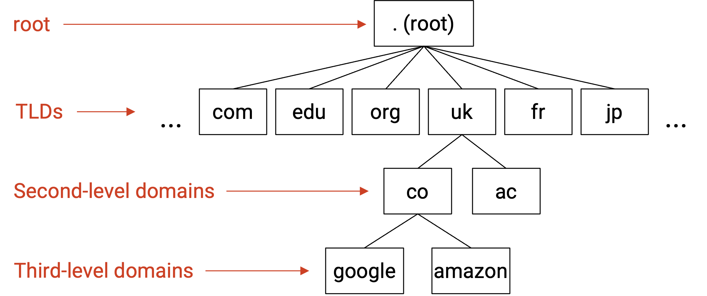
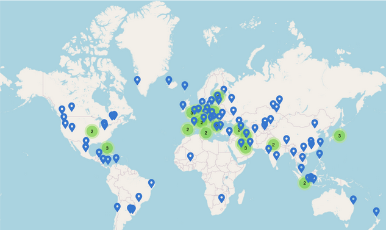

DNS
What is DNS For?
In this section, we’ll be looking at a few common applications (Layer 7) that operate on top of the layers we’ve built so far.

The first application we’ll look at is DNS, which is a protocol that operates on top of the layers (1-4) to provide the important network functionality of name resolution.
The Internet is commonly indexed in two different ways. Humans refer to websites using human-readable names such as google.com and eecs.berkeley.edu, while computers refer to websites using IP addresses such as 172.217.4.174 and 23.195.69.108. DNS, or the Domain Name System, is the protocol that translates between the two.
Brief History of DNS
To understand why DNS was designed the way it was, it helps to go back and look at the history of its development.
On the original Internet and its predecessor (ARPANET), there were three key applications. This is before the World Wide Web and web browsers, back when most applications ran on the command line.
Remote terminal (telnet) allowed users to connect to another machine remotely, and run commands on that remote computer. You might have heard of SSH, which is a modern, secure version of this protocol.
File transfer allowed users to transfer files between their local computer and a remote computer. You might have heard of FTP, which is the application-level protocol for file transfers.
Email allowed users to exchange messages to each other. Modern email comes with a web client in your browser, but originally, users had to type a command in the terminal like mail alice@46.0.1.2, where 46.0.1.2 is the IP address of the recipient, and alice is the recipient user on that machine.
In all three cases, performing an operation requires specifying a remote host. But, as we mentioned, remembering the IP addresses of remote hosts is hard and not user-friendly.
The first attempt to fix this problem was to assign a hostname to every IP address. Every computer would have a file called hosts.txt mapping every hostname to its IP address. For example, we can map hostname ucb-arpa to 10.0.0.78, and rewrite mail mosher@10.0.0.78 as mail mosher@ucb-arpa.
This concept actually still exists today. If you’ve ever started a server on your own computer, it probably has the IP address 127.0.0.1 and the hostname localhost. Typing either one in your browser gives you the same result.
We have to ensure that hosts.txt is the same across different computers. If you went to a different computer and typed mail mosher@ucb-arpa, you should probably be sending mail to the same person. The hosts file was originally maintained by a single person (Elizabeth Feinler), and passed between users by physically copying a paper document.
The original paper hosts file was human-readable. It mapped hostnames to addresses, but also included information like the user’s full name, the protocols they ran (e.g. TCP, FTP), and even their phone number.

Everybody agreed (as mentioned in RFC606 in 1973) that this was an absurd situation. If you get a paper copy of the file, you’d have to manually input it into your computer. Also, the file was passed around on paper, so you might have an outdated file.
The first improvement was to make the list machine-readable. Now, instead of paper copies, we could at least use protocols like FTP to share the file. But this still isn’t scalable. We can’t ask a single person to maintain this file forever. Also, as the file grew big, downloading the file could get very slow, and if the network connection broke, you might end up with a partial file.
DNS was first proposed in 1983 (RFC882) as a solution to these problems. There have been some modifications since, but the fundamental system is still in use to this day.
Fun fact: The first software written for running DNS servers on Unix was BIND (1984, UC Berkeley), and it’s still pretty common today.
DNS Design Goals
This brief history informs some of the design goals of DNS that we should keep in mind.
DNS must be scalable. The Internet has a huge number of hosts, and a huge number of lookups are performed every second. Hosts can also be added and removed frequently.
DNS must be highly-available, lightweight, and fast. Almost every Internet connection starts with a DNS lookup to translate host name to IP address. Therefore, DNS should be extremely fast, or else every connection would be slowed down. Also, there shouldn’t be a single point of failure, or else the Internet would stop working on a failure.
Name servers
It would be great if there was single centralized server that stored a mapping from every domain to every IP address that everyone could query, but unfortunately, there is no server big enough to store the IP address of every domain on the Internet and fast enough to handle the volume of DNS requests generated by the entire world. Instead, DNS uses a collection of many name servers, which are servers dedicated to replying to DNS requests.
Each name server is responsible for a specific zone of domains, so that no single server needs to store every domain on the Internet. For example, a name server responsible for the .com zone only needs to answer queries for domains that end in .com. This name server doesn’t need to store any DNS information related to wikipedia.org. Likewise, a name server responsible for the berkeley.edu zone doesn’t need to store any DNS information related to stanford.edu.
Even though it has a special purpose (responding to DNS requests), a name server is just like any other server you can contact on the Internet–each one has a human-readable domain name (e.g. a.edu-servers.net) and a computer-readable IP address (e.g. 192.5.6.30). Be careful not to confuse the domain name with the zone. For example, this name server has .net in its domain, but it responds to DNS requests for .edu domains.
Name server hierarchy
You might notice two problems with this design. First, the .com zone may be smaller than the entire Internet, but it is still impractical for one name server to store all domains ending in .com. Second, if there are many name servers, how does your computer know which one to contact?
DNS solves both of these problems by introducing a new idea: when you query a name server, instead of always returning the IP address of the domain you queried, the name server can also direct you to another name server for the answer. This allows name servers with large zones such as .edu to redirect your query to other name servers with smaller zones such as berkeley.edu. Now, the name server for the .edu zone doesn’t need to store any information about eecs.berkeley.edu, math.berkeley.edu, etc. Instead, the .edu name server stores information about the berkeley.edu name server and redirects requests for eecs.berkeley.edu, math.berkeley.edu, etc. to a berkeley.edu name server.
DNS arranges all the name servers in a tree hierarchy based on their zones:
The root server at the top level of the tree has all domains in its zone (this zone is usually written as .). Name servers at lower levels of the tree have smaller, more specific zones.
DNS Lookup (Conceptual)
DNS queries always start at the root. The root will direct your query to one of its children name servers. Then you make a query to the child name server, and that name server redirects you to one of its children. The process repeats until you make a query to a name server that knows the answer, which will return the IP address corresponding to your domain.
To redirect you to a child name server, the parent name server must provide the child’s zone, human-readable domain name, and IP address, so that you can contact that child name server for more information.
As an example, a DNS query for eecs.berkeley.edu might have the following steps. (A comic version of this query is available at howdns.works.)
- You to the root name server: Please tell me the IP address of
eecs.berkeley.edu. - Root server to you: I don’t know, but I can redirect you to another name server with more information. This name server is responsible for the
.eduzone. It has human-readable domain namea.edu-servers.netand IP address192.5.6.30. - You to the
.eduname server: Please tell me the IP address ofeecs.berkeley.edu. - The
.eduname server to you: I don’t know, but I can redirect you to another name server with more information. This name server is responsible for theberkeley.eduzone. It has human-readable domain nameadns1.berkeley.eduand IP address128.32.136.3. - You to the
berkeley.eduname server: Please tell me the IP address ofeecs.berkeley.edu. - The
berkeley.eduname server to you: OK, the IP address ofeecs.berkeley.eduis23.185.0.1.
Once we get the answer, we can store it in our cache so that we don’t have to ask again if we need this record again later.
Stub Resolvers and Recursive Resolvers
Originally, the end host (e.g. your computer) would perform the DNS lookups, contacting each name server.
Today, your local computer usually delegates the task of DNS lookups to a DNS Recursive Resolver, which queries the name servers for you. When performing a lookup, the DNS Stub Resolver on your computer sends a query to the recursive resolver, lets the resolver do all the work, and receives the response back from the resolver.
How do we learn the IP address of the resolver? When you first connect to the Internet, somebody can tell you the resolver address. You can also manually enter the address of a resolver you want to use.
Some well-known resolvers on the Internet include 1.1.1.1 (run by Cloudflare) and 8.8.8.8 (run by Google). They often have memorable IP addresses so we don’t have to refer to them by name. Otherwise, we’d have to do a DNS lookup to find their IP address, and the whole point of these servers is to do DNS lookups for us.
In addition to tech companies, ISPs also operate resolvers, as part of the Internet service they sell to customers. (It would be pretty bad if you paid for Internet service, but had to type IP addresses in your web browser.)
The router in your home can also act as a resolver. DNS queries can be faster if you use a router that’s physically close to you (less delay between you and the router).
One major benefit of a resolver is better caching. The resolver processes queries from lots of different end hosts (not just your own computer), so it builds a much larger cache. If you ask the resolver about eecs.berkeley.edu, and somebody before you asked the resolver that same question recently, the resolver can give you the answer without contacting any additional name servers.
Note that even though recursive resolvers store larger caches, the stub resolver can still maintain its own separate cache. Some queries can get answered by the stub resolver’s cache, without even asking the recursive resolver.
Redundancy
So far, we’ve been talking about “the berkeley.edu name server,” but in reality, each zone has multiple name servers. All the name servers for a zone are functionally identical, and each name server can answer any query in the zone.
This ensures that we have availability for that zone, and if one name server goes down, the others can keep answering queries for that zone. By convention, zones are required to have two name servers, though in practice, most zones will have at least three.
Usually, one of the name servers is designated as the primary server that actually manages the zone. The rest of the servers are secondary mirror servers that just store and serve a copy of the information on the primary server.
Now, in the DNS lookup, name servers might reply to you with: “I don’t know, but you should ask the .edu zone. This zone has 13 name servers. Here are the domains and IP addresses for each of them.” Then, you can pick which of the name servers to contact next.
DNS APIs
Now that we have a conceptual picture of DNS, let’s see how it’s actually implemented.
For starters, how do programmers use DNS to perform lookups?
There are relatively simple, common, and stable stable APIs to perform DNS lookups. The API is fairly similar across different languages.
In the standard C library, gethostbyname("foo.com") can be used to look up the IP address corresponding to foo.com. This function is limited to IPv4, though, so it’s now deprecated (though you’ll still see it used).
The updated version, also in the standard C library, is getaddrinfo("example.com", NULL, NULL, &result), which looks up the IP address of example.com and stores the answer in the result struct. Don’t worry too much about the specifics or the extra arguments (set to null here). This replacement API supports more than IPv4 (e.g. IPv6).
As a programmer, you don’t need to worry about DNS complexities like recursive resolvers or specific name servers. You can just call a standard library function. These functions usually make requests to the stub resolver in your operating system.
DNS uses UDP, Not TCP
Fundamentally, DNS is a client-server protocol. One person (the client) sends a question, and the other person (the server) sends the answer. The client is usually a user host or recursive resolver, and the server is usually a name server. How should the client and server format their messages?
DNS uses UDP (best-effort packets, no TCP handshakes) to make DNS lightweight and fast. We don’t have to wait for a 3-way TCP handshake to complete. We don’t care about packets arriving in order, because queries and responses often fit into a single UDP packet.
With UDP, servers don’t need to keep state per connection (contrast with TCP, where the server has to maintain a buffer). Every packet can be processed independently. This also helps keep DNS lightweight, since name servers receive lots of requests, and opening a new connection for each one would be expensive.
How do we deal with UDP being unreliable and packets being dropped? We can solve this with a simple retry mechanism. If you don’t get a reply within some time limit, send the query again. The timeout varies between operating systems, though it can be fairly slow.
UDP being unreliable and timeouts being slow is why it’s important to have a resolver that’s nearby and can be contacted reliably. For example, a resolver in your home router is close to you, and probably pretty reliable (not too much congestion in your home network). You can also improve reliability by having multiple backup resolvers (e.g. home router and 8.8.8.8).
As we mentioned, DNS queries and responses usually fit into a single packet. One notable exception is when we transfer a zone between a primary name server and secondary name servers. The secondary name server has to say: Give me all your records, so that I can help you serve them. The response is probably going to be very big, so these transfers are often done over TCP.
Recent advances in DNS have added security features (e.g. stop an attacker from changing the records in flight), which might also require switching from UDP to TCP.
Recall that UDP implements ports to support multiple applications on a single server. By convention, all name servers listen for DNS queries on UDP port 53. This port number is well-known and constant so that everybody can contact the correct port on name servers.
DNS Message Format

The first field is a 16 bit identification field that is randomly selected per query and used to match requests to responses. When a DNS query is sent, the ID field is filled with random bits. Since UDP is stateless, the DNS response must send back the same bits in the ID field so that the original query sender knows which DNS query the response corresponds to.
The next 16 bits are reserved for flags. The QR bit specifies whether the message is a query (bit is 0) or a response (bit is 1). The RD bit indicates whether you want the resolver to perform a recursive lookup, or just return whatever the name server says (even if it’s “I don’t know”).
Theoretically, you can specify a query type in the flags, though the IQUERY type is obsolete, and the STATUS type is not really defined, so the QUERY type is used for basically everything.
The flags can also specify whether the query was successful (e.g. the NOERROR flag is set in the reply if the query succeeded, the NXDOMAIN flag is set in the reply if the query asked about a non-existent name).
The next field specifies the number of questions asked (in practice, this is always 1). The three fields after that are used in response messages and specify the number of resource records (RRs) contained in the message. We’ll describe each of these categories of RRs in depth later.
The rest of the message contains the actual content of the DNS query/response. This content is always structured as a set of RRs, where each RR is a key-value pair with an associated type.
For completeness, a DNS record key is formally defined as a 3-tuple <Name, Class, Type>, where Name is the actual key data, Class is always IN for Internet (except for special queries used to get information about DNS itself), and Type specifies the record type. A DNS record value contains <TTL, Value>, where TTL is the time-to-live (how long, in seconds, the record can be cached), and Value is the actual value data.
There are three main types of records in DNS. A type records map domains to IPv4 addresses. The key is a domain, and the value is an IP address. Similarly, AAAA type records map domains to IPv6 addresses. NS type records map zones to domains. The key is a zone, and the value is a domain.
You might sometimes encounter a CNAME type record, which is used for aliasing or redirecting. The name and value are both domains, and the record indicates that both domains have the same IP address.
Important takeaways from this section: Each DNS packet has a 16-bit random ID field, some metadata, and a set of resource records. Each record falls into one of four categories (question, answer, authority, additional), and each record contains a type, a key, and a value. There are A type records and NS type records.
DNS Lookup (Implementation)
Now, let’s walk through a real DNS query for the IP address of eecs.berkeley.edu. You can try this at home with the dig utility – remember to set the +norecurse flag so you can unravel the recursion yourself.
Every DNS query begins with the root server. The names and IP addresses of the root servers are usually hardcoded into resolvers, in the form of a root hints file. Here’s a root hints file if you’re curious: https://www.internic.net/domain/named.root.
The first root server has domain a.root-servers.net and IP address 198.41.0.4. We can use dig to send a DNS request to this address, asking for the IP address of eecs.berkeley.edu.
$ dig +norecurse eecs.berkeley.edu @198.41.0.4
;; Got answer:
;; ->>HEADER<<- opcode: QUERY, status: NOERROR, id: 26114
;; flags: qr; QUERY: 1, ANSWER: 0, AUTHORITY: 13, ADDITIONAL: 27
;; QUESTION SECTION:
;eecs.berkeley.edu. IN A
;; AUTHORITY SECTION:
edu. 172800 IN NS a.edu-servers.net.
edu. 172800 IN NS b.edu-servers.net.
edu. 172800 IN NS c.edu-servers.net.
...
;; ADDITIONAL SECTION:
a.edu-servers.net. 172800 IN A 192.5.6.30
b.edu-servers.net. 172800 IN A 192.33.14.30
c.edu-servers.net. 172800 IN A 192.26.92.30
...
In the first section of the answer, we can see the header information, including the ID field (26114), the return flags (NOERROR), and the number of records returned in each section.
The question section contains 1 record (you can verify by seeing QUERY: 1 in the header). It has key eecs.berkeley.edu, type A, and a blank value. This represents the domain we queried for (the value is blank because we don’t know the corresponding IP address).
The answer section is blank (ANSWER: 0 in the header), because the root server didn’t provide a direct answer to our query.
The authority section contains 13 records. The first one has key .edu, type NS, and value a.edu-servers.net. This is the root server giving us the zone and the domain name of the next name servers we could contact. Each record in this section corresponds to a potential name server we could ask next.
Notes: Usually, the server with the earliest name (alphabetically or numerically) is the primary server (here, a.edu-servers.net), and the rest are mirrors. Also, note that it’s okay that there are multiple records with the same name (.edu). This just tells us there are multiple name servers that can all answer queries for this zone.
The additional section contains 27 records. The first one has key a.edu-servers.net, type A, and value 192.5.6.30. This is the root server giving us the IP address of the next name server by mapping a domain from the authority section to an IP address.
Together, the authority section and additional section combined give us the zone, domain name, and IP address of the next name server. This information is spread across two sections to maintain the key-value structure of the DNS message.
For completeness: 172800 is the TTL (time-to-live) for each record, set at 172,800 seconds = 48 hours here. The IN is the Internet class and can basically be ignored. Sometimes you will see records of type AAAA, which correspond to IPv6 addresses (the usual A type records correspond to IPv4 addresses).
Sanity check: What name server do we query next? How do we know where that name server is located? What do we query that name server for?\footnote{Query a.edu-servers.net, whose location we know because of the records in the additional section. Query for the IP address of eecs.berkeley.edu just like before.}
$ dig +norecurse eecs.berkeley.edu @192.5.6.30
;; Got answer:
;; ->>HEADER<<- opcode: QUERY, status: NOERROR, id: 36257
;; flags: qr; QUERY: 1, ANSWER: 0, AUTHORITY: 3, ADDITIONAL: 5
;; QUESTION SECTION:
;eecs.berkeley.edu. IN A
;; AUTHORITY SECTION:
berkeley.edu. 172800 IN NS adns1.berkeley.edu.
berkeley.edu. 172800 IN NS adns2.berkeley.edu.
berkeley.edu. 172800 IN NS adns3.berkeley.edu.
;; ADDITIONAL SECTION:
adns1.berkeley.edu. 172800 IN A 128.32.136.3
adns2.berkeley.edu. 172800 IN A 128.32.136.14
adns3.berkeley.edu. 172800 IN A 192.107.102.142
...
The next query also has an empty answer section, with NS records in the authority section and A records in the additional section which give us the domains and IP addresses of name servers responsible for the berkeley.edu zone.
$ dig +norecurse eecs.berkeley.edu @128.32.136.3
;; Got answer:
;; ->>HEADER<<- opcode: QUERY, status: NOERROR, id: 52788
;; flags: qr aa; QUERY: 1, ANSWER: 1, AUTHORITY: 0, ADDITIONAL: 1
;; QUESTION SECTION:
;eecs.berkeley.edu. IN A
;; ANSWER SECTION:
eecs.berkeley.edu. 86400 IN A 23.185.0.1
Finally, the last query gives us the IP address corresponding to eecs.berkeley.edu in the form of a single A type record in the answer section.
In practice, because the recursive resolver caches as many answers as possible, most queries can skip the first few steps and used cached records instead of asking root servers and high-level name servers like .edu every time. Caching helps speed up DNS, because fewer packets need to be sent across the network to translate a domain name to an IP address. Caching also helps reduce request load on the highest-level name servers.
Now that we know how DNS is implemented to support queries, we can look at how DNS actually works in practice, and explore the real-world business side of DNS.
DNS Authority Hierarchy
The tree hierarchy that we’ve drawn actually represents three different ways in which DNS is hierarchical.
As we’ve already seen, DNS names are hierarchical. This is why our domain names, like eecs.berkeley.edu, are multiple words separated by dots.

We’ve also seen that the infrastructure of DNS is hierarchical. We can organize name servers into the tree hierarchy, where each name server only knows about its own part of the tree.

The third hierarchy that we’ll introduce is authority. This tells us who defines the names that exist in the tree. For example, the organization that operates the .edu name server is responsible for all the domains in the .edu zone. The .edu organization can then delegate authority for parts of its zone to subordinates in the tree.
For example, the .edu organization can say: berkeley.edu (and all subdomains) is in my zone, and I will transfer control of this part of my zone to the UC Berkeley organization. Now, we’ve created a new zone owned by UC Berkeley, and the .edu organization doesn’t need to be aware of updates in this new berkeley.edu zone. UC Berkeley has the authority to create new domains in its zone, or perhaps delegate some parts of its zone to further sub-organizations.
When we draw this tree with all three hierarchies in mind, we can be more precise and say that each node represents a zone. A zone is formally defined as an administrative authority responsible for some part of the hierarchy.
From the naming perspective, each zone contains one or more name-IP mappings, where the names are subdomains of that zone. The eecs.berkeley.edu zone can contain the name eecs.berkeley.edu or the name iris.eecs.berkeley.edu, but cannot contain the name math.berkeley.edu.
From the infrastructure perspective, that zone is supported by one or more name servers answering queries about the domains in that zone.
From the authority perspective, the zone is controlled by some organization, who was given authority by its parent to manage the names in that zone. For example, UC Berkeley, who controls the berkeley.edu zone, can delegate the eecs.berkeley.edu zone to the EECS department.
DNS Zones in Practice
Who are these organizations in real life?

The root zone is controlled by ICANN (Internet Corporation for Assigned Names and Numbers). They are responsible for delegating parts of the root zone (which represents the entire Internet) to specific top-level domains.
All of the zones directly beneath the root in the tree are top-level domains (TLDs). The Internet was originally developed in the US, so the earliest TLDs split the Internet into zones based on purpose, such as .com (commercial), .gov (government), .edu (education), and .mil (military). Eventually, TLDs for countries were created, such as .fr (France) and .jp (Japan).
Historically, there were relatively few TLDs. More recently, ICANN started selling new TLDs for a registration price of $150,000 (plus ongoing maintenance costs), which led to an explosion of new TLDs. As of 2024, there are over 1,500 TLDs, including company-specific TLDs like .google, and more exotic TLDs like .travel or .pizza.
Each TLD is run by some organization, and that organization can decide its own structure for how to further divide up that TLD. For example, the .uk TLD is managed by Nominet, and they decided to split up the .uk zone by purpose, creating zones such as .co.uk (commercial), .ac.uk (academia).
Zones further down in the tree can be referred to by their depth. example.com is a second-level domain, and blog.example.com is a third-level domain. These zones are usually controlled by various organizations and companies, who buy those zones from the parent zone. When you buy a zone, you also need to tell the parent zone about the name servers you’re using. This allows the parent zone to redirect users to your name servers.
The name servers further down the tree are usually often run by domain name registrars. Registrars are companies that own specific zones, and allow users to host their services on specific domains in that zone. For example, I might pay a monthly fee to host my website on blog.foo.com. The registrar will usually offer to add the corresponding domain-to-IP mapping to its name servers.
In addition to registrars, companies like Google might also run their own name servers for their own applications (e.g. provide the record for maps.google.com). Amazon Web Services also has a name server called Route 53, where users can add records to be served.
Root Server Availability with Anycast
It would be really bad if the root servers were unavailable. Someone with an empty cache would be unable to make any DNS requests. Eventually, everyone’s caches would empty out as TTLs expire, and the Internet would stop working.
For redundancy, there are 13 root servers located around the world. We can look up the IP addresses of the root servers, which are public and well-known.
13 still seems like kind of a low number, considering the entire Internet relies on them. To provide extremely high availability, there are actually way more than 13 root servers, but the list only contains 13 IP addresses, because of a clever trick called anycast.
In the anycast trick, we deploy many mirrors of a root server, and use the same IP address for all of them. If you contact the domain k.root-servers.net or its corresponding IP address, you could be talking to any one of its mirrors.
Each of the 13 root servers is actually made up of a bunch of mirrors. For example, f.root-servers.net has over 3,000 instances. The mirrors could be run by different network operators (e.g. Google and Cloudflare might help run root mirrors).
To implement anycast, during the routing protocol, every mirror announces the same IP address. The rest of the routing protocol still works the same. You might hear many announcements about routes to k.root-servers.net, and you can accept any of them, and you’ll end up routing packets to one of the mirrors. If one of the mirrors goes down, the rest of the mirrors are still sending announcements, and you can accept a different route to maintain availability.
Anycast also means that root IPs very rarely change, even as mirrors are added and removed. As a result, the root hints file contains records for the root name servers with very long TTLs (42 days).

Here’s a map of all the mirrors for k.root-servers.net. All of them advertise the same IP address, and your router probably chooses to talk to the closest mirror. k.root-servers.net is operated by RIPE (in Europe), which might explain why there are so many mirrors in Europe.
Public resolvers like Google’s 8.8.8.8 can also be anycast for high availability.
DNS for Email
DNS can be used to store and serve more than domain-to-IP mappings. For example, if you want to send email to an address like evanbot@berkeley.edu, your computer still needs to know where to send packets.
To translate email addresses to mail servers, we can use MX type records. These records map domains like berkeley.edu to mail servers like aspmx.l.google.com. Note that it’s okay if the mail server is in a different zone (e.g. here, the mail servers for UC Berkeley are operated by Google).
Historically, an email address corresponded to a user on a specific machine, so the mail server would be that machine. Nowadays, you probably want to be able to access your email from anywhere. That’s why the MX records map to mail servers like aspmx.l.google.com, which receive your mail and let you access your mail from any computer.
One key difference in MX records is that the values also contain a priority. If you receive multiple MX records, all mapping the same domain to different mail servers, you should try the mail server with the highest priority (lowest number) first.
DNS for Load Balancing
We saw in the demo that the final name server returned a single A type record, but it’s actually possible to receive multiple A type records, mapping a single domain to multiple IP addresses. There’s no order to these records, and the server might shuffle the order before returning them. Any of them are valid, and the client can pick any of them (usually the first one). Providing multiple IP addresses is useful for load-balancing and redundancy.
It’s also possible for the name server to send back different A type records, depending on who sent the query, and where they sent the query from. This can be useful if we want to balance the load for a popular domain like www.google.com across multiple servers. For example, we can try to send the user to the nearest server.
The name server now needs additional (possibly proprietary) logic to decide which record(s) to send in the reply. The name server could check who the recursive resolver is. It could also check who the end client is, though this requires an extension to DNS so that the resolver’s query includes the client address. It could even check the geographic location of the end user, though this requires some mapping of IP address to physical location. Commerical databases like MaxMind exist for mapping IP addresses to physical locations.
Load balancing based on the user’s geographical location isn’t perfect. Even if we knew our servers’ physical locations and the user’s physical location, we have to do some guesswork about which server is closest from a network perspective. We also don’t know about the performance (e.g. network bandwidth) between the user and the different servers.
Here’s an experiment to see how well Google’s geographic load balancing performs. We looked up www.google.com in San Francisco and Oregon and got two different IP addresses.
We then did a reverse lookup to match each IP address to a specific server name (different for each server, not www.google.com). The result is a PTR type record, which maps IP address to name (reverse of A type record). We can see that the IP address that Google gave us in San Francisco is mapped to some server with the name sfo03s25. Assuming sfo stands for San Francisco, that’s pretty good!
If we look at the latency, connecting from the San Francisco computer to the IP address served to San Francisco takes 20 ms, and connecting from the San Francisco computer to the IP address served to Oregon takes 35 seconds. Google did a good job giving the San Francisco computer a closer server!